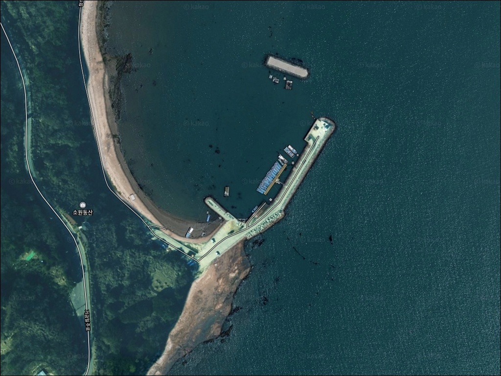
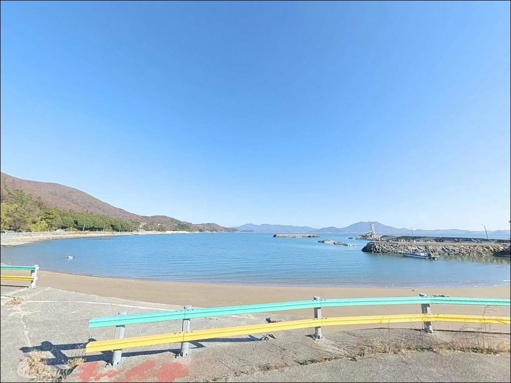
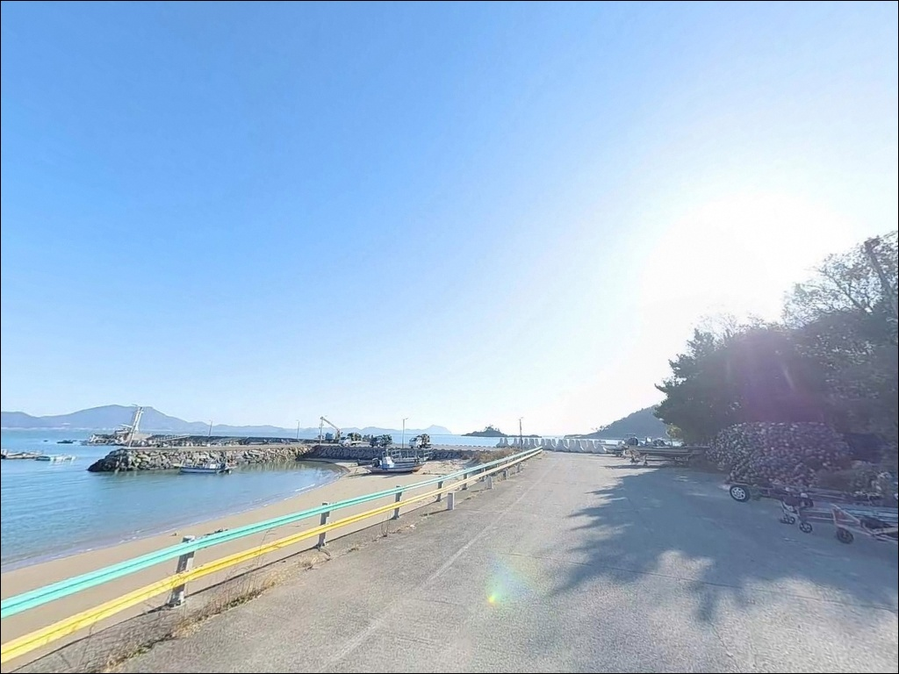
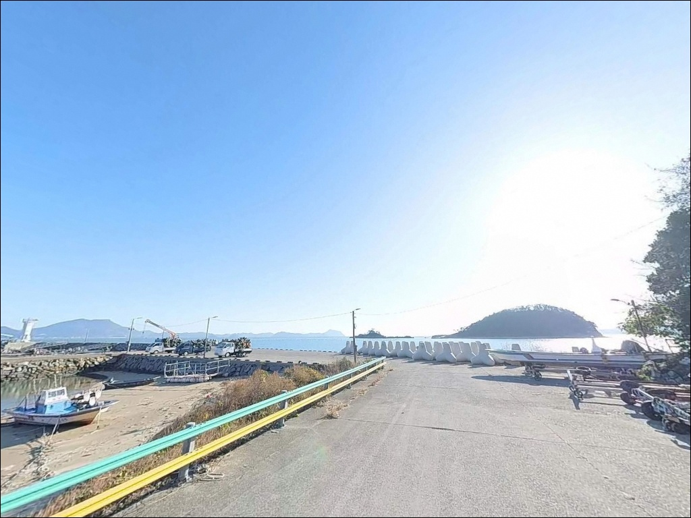
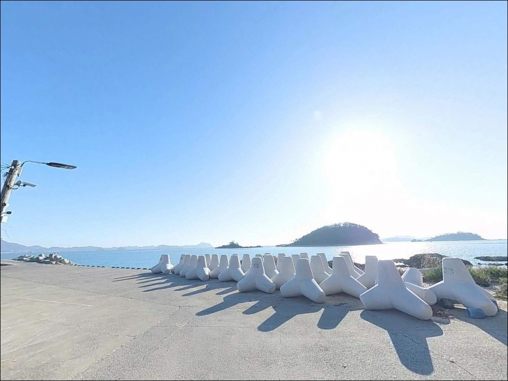
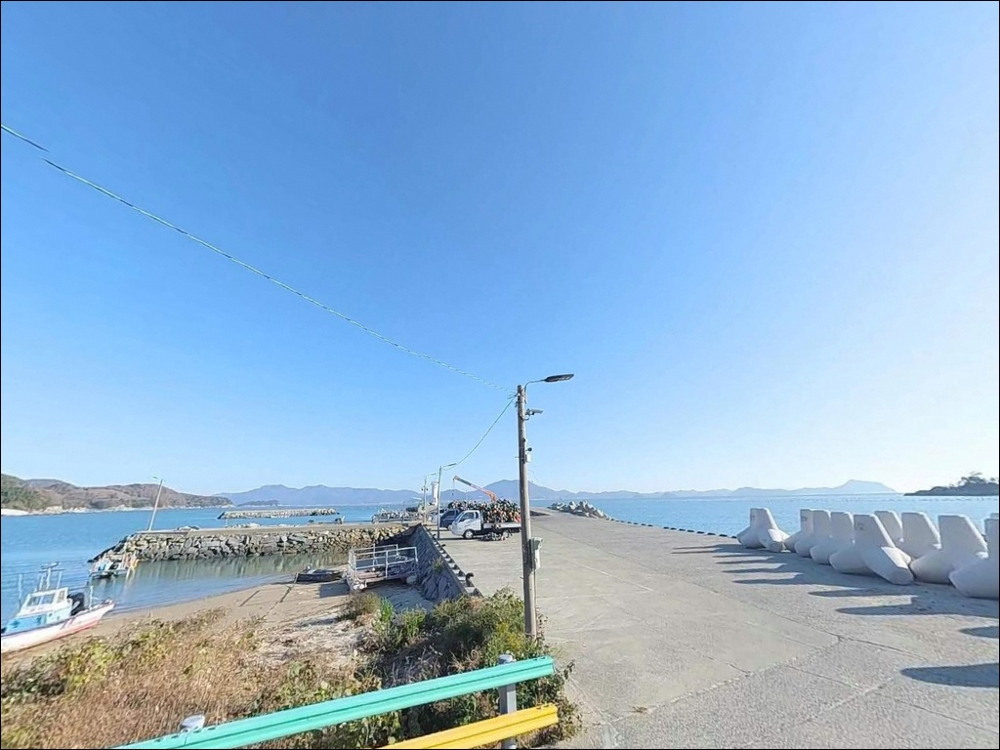
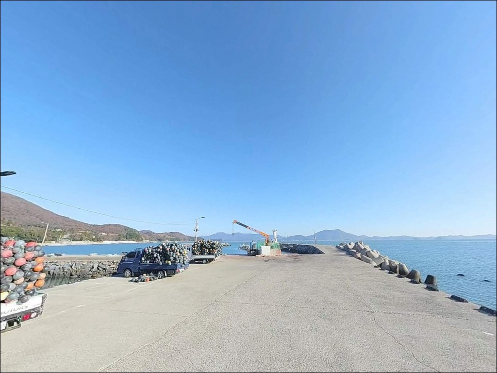
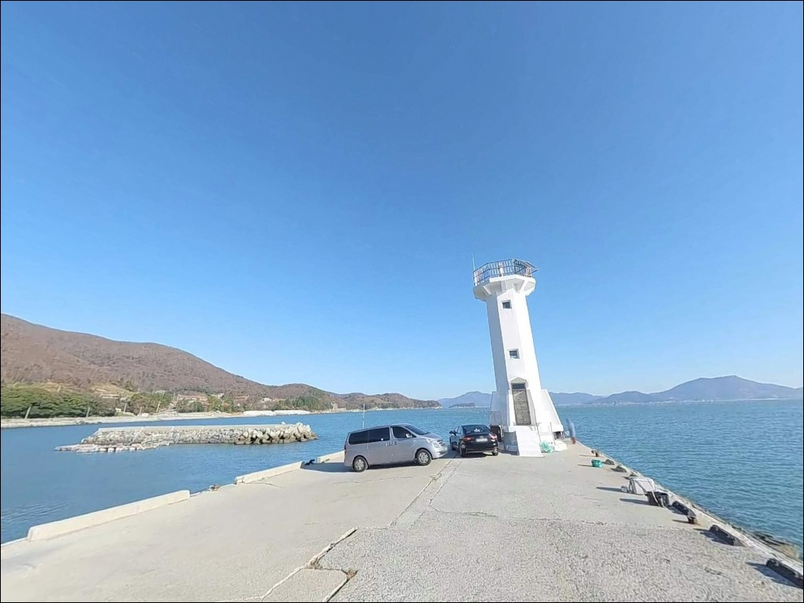
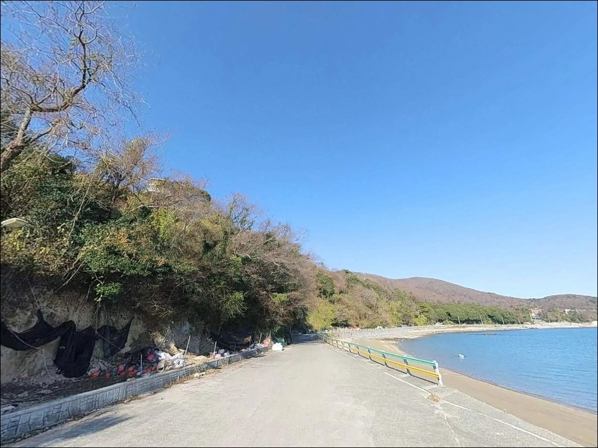

이 페이지에는 광고(제휴 링크 포함)가 있으며, 광고 링크를 통해 구매하면 운영자가 판매 수익 또는 수수료를 받을 수 있습니다. 포인트 사진: 카카오맵 스카이뷰·로드뷰. 이 페이지의 지도·사진 이미지는 카카오맵의 실제 서비스 이미지와 다를 수 있습니다.

오천방파제
전남 고흥군 금산면 오천리 61-73
2024년 7월 국가어항 공사가 착공된 이후,
이 포인트의 현장 접근 환경은
이전과 달라졌습니다.
공사 구역과 기존 낚시 포인트의 경계가
방문 시점마다 달라질 수 있어
출발 전 현황 확인이 먼저입니다.
거금도 청석마을 앞 소형 석축 방파제인
오천방파제는 거금수도를 정면으로 마주한 구조입니다.
조류가 집중되는 이 해역에서
방파제 끝단 수심과 조류 흐름은
원투낚시와 루어낚시 모두에
실전 조건을 만들어 주는 지형입니다.
이 글은 오천방파제의
진입 동선, 공사 현황, 차박 여건,
지형 기반 낚시 방식 판단에 집중합니다.
조황 단정이나 특정 어종 보장은
이 글의 범위에 포함되지 않습니다.

거금도 진입은 소록대교와 거금대교를 순서대로 통과하는 방식입니다.
육지에서 두 개의 연육교를 거치면
거금일주로가 섬 전체를 감싸며 이어져 있어
오천리까지의 이동 동선 자체는 단순합니다.
포장도로가 방파제 방향으로 연결되어 있어
승용차·SUV 기준 진입에 큰 부담은 없습니다.
다만 청석마을 진입 후 방파제까지 이어지는 구간은
어촌 마을길 수준의 폭입니다.
대형 캠핑카나 트레일러를 연결한 차량이라면
출발 전 위성지도로 회차 공간을 먼저 확인하는 편이 좋습니다.
방파제 끝단까지 차량 진입이 가능한 구조이며
끝단에서 회차도 됩니다.
2024년 7월 착공된 국가어항 공사가
2028년 완공 예정으로 진행 중입니다.
공사 차량과 진입로 동선이 중복되는 시간대가 있고,
신규 방파제 구역은 접근 제한 구간으로 운영됩니다.
공사 현황은 출발 당일 재확인하는 것이
이 포인트를 방문하는 기본 절차입니다.

오천방파제 차박의 기준점은
인근 오천몽돌해변입니다.
해변에 주차시설이 마련되어 있어
방파제 접근 동선과 차박 공간을
분리해서 운용하기 좋은 구조입니다.
고흥 10경에 포함된 금산해안 경관권 안에 위치하여
해변 방향 차량 배치 시 탁 트인 수평선 조망이
확보됩니다.
청석마을과 방파제 사이 거리가 있어
야간 소음 민감도는 낮은 편입니다.
등대가 끝단에 설치되어 있어
최소한의 시야는 확보됩니다.
다만 공사 구역 야간 조명이 가동되는 날에는
방파제 주변 밝기에 변수가 생깁니다.
개인 헤드랜턴은 어떤 경우에도 필수입니다.
거금수도에 직접 노출된 구조로
북서풍이나 서풍이 강해지면
바람 영향이 바로 체감됩니다.
차박 체류 전 기상청 풍속 예보를
반드시 확인하는 것이 기본입니다.

오천방파제 반경 1km 이내는
청석마을과 소원동산이 인접한
소규모 어촌 환경입니다.
편의점·마트 수준의 시설은
기대하기 어려운 입지이며,
완전 자급 체제로 진입하는 것이
현실적인 준비 방식입니다.
반경 10km권에서는 녹동읍내가
편의점·마트·주유소·약국이 집중된
생활 인프라 거점으로 기능합니다.
오천방파제 출발 전 녹동 방면에서
필요한 소품과 식량을 미리 보충하고
들어오는 동선이 효율적입니다.
오천몽돌해변은 여름철 관광 시즌에
주변 인프라 이용이 다소 유리해집니다.
비수기에는 현장 의존도가 낮아지므로
식수·연료·비상약품을
출발 전 완비하는 것이 기본 준비입니다.

오천방파제는 거금수도를 마주한 구조입니다.
이 해역의 최강 조류는 창조류 기준 3.1노트 수준에 달하는
강류 해역으로 분류됩니다.
사리 전후에는 원투 채비를 던져도
흐름에 밀려 포인트를 벗어나기 쉽습니다.
바다타임에서 오천항 기준 물때를 확인하고
초들물~만조 구간을 노려 출발 시각을 잡는 것이
이 포인트의 기본 전략입니다.
조류가 강한 해역 특성상
원투 채비와 루어 채비 모두
일반보다 무거운 봉돌·지그헤드 세팅이 필요합니다.
여분 채비를 넉넉히 챙겨야 하며,
바닥 지형이 펄 구간과 여밭 구간이 섞여 있어
밑걸림 대비 여분 준비는 필수입니다.
외항 노출 구조로 기상 변화가 빠릅니다.
당일 아침 기상청 풍속·파고 예보를 재확인하고,
북서~서풍 강화 예보가 있다면
방문 일정을 재조정하는 판단이
헛걸음을 막는 기본 조건입니다.

오천방파제는 테트라포드 없이
콘크리트 석축으로 마감된 소형 방파제입니다.
발판이 평탄하여 낚시 편의성이 높고
끝단까지 차량이 붙을 수 있어
장비 이동 부담도 적습니다.
외항은 거금수도를 직접 마주하며
내항은 상대적으로 수심이 얕고 잔잔합니다.
수심은 만조 기준 방파제 끝단 외항 쪽으로
4~7m 내외 구간이 형성됩니다.
간조에는 1.5~3m 수준으로 낮아져
펄 저질 구간에서 낚시 효율이 떨어집니다.
끝단 외항 모서리 라인이 1순위 포인트이며,
외항 직벽 구간이 그다음입니다.
조류가 끝단에 집중되는 구조로
물때 타이밍에 따라 입질 구간이 달라지는
포인트입니다.
바닥은 펄과 혼합 지형이 섞인 구간으로,
외항 방향 장타 후 서서히 끌어오는 방식이
이 포인트 지형에 잘 맞습니다.
여밭 경계 구간에서는 밑걸림 주의가 필요하며,
방파제 끝단 조류를 타는
5~10m 권이 조과를 기대할 수 있는 구간입니다.
출조 전에 최신 조황은 반드시 검색해 보시기 바랍니다.

원투낚시는 이 포인트 지형에서
가장 기본이 되는 스타일입니다.
펄 저질과 혼합 지형을 훑어
붕장어·숭어를 노리는 방식이
거금수도 해역 방파제 전반에 통합니다.
크릴·청갯지렁이를 미끼로 사용하며
들물 타이밍에 외항 방향 장타를 집중하는 것이 기본입니다.
루어낚시도 이 포인트 지형과 잘 맞습니다.
거금수도 일대는 볼락·노래미·농어
루어 포인트로 꾸준히 활용되는 해역입니다.
지그헤드에 그럽웜 조합이 기본이며,
조류가 셀 때는 메탈지그 세팅으로 바꾸는 편이 유리합니다.
방파제 끝단 외항 방향 캐스팅 후
천천히 리트리브하며 조류를 태우는 방식이 어울립니다.
찌낚시를 운용한다면
외항 방향으로 들물 조류를 태워
감성돔을 노리는 릴찌낚시가
이 해역 구조에 잘 맞습니다.
조류가 강한 구간에서는
부력이 낮은 찌보다 봉돌 비중이 있는
반유동 세팅이 컨트롤에 유리합니다.
봄~가을 수온 안정기에 활성도가 높아지는 편입니다.

오천방파제 공사 구역 때문에
자리 잡기가 어렵거나 진입이 제한된다면
가장 가까운 대안은
오천항 방파제입니다.
약 1.7km 거리로 같은 해역 조건을 공유하며
조류 패턴과 수심 구조가 유사합니다.
기상 악화나 바람 회피가 필요할 때는
녹동항이 최선의 대안입니다.
오천방파제에서 약 11.7km 거리이며
소록도와 녹동항 사이 물골로
상시 조류가 흘러 물때 의존도가 낮습니다.
낚시 정보가 풍부하고 진입과 주차가 안정적이어서
초행이라면 녹동항을 기점으로 잡고
오천방파제를 병행 탐색하는 동선이 효율적입니다.
거금도 내에서 이동한다면
익금해수욕장 방파제가 소형 조용한 포인트로
차량 10분 거리에 있습니다.
차박 대체 공간으로는
오천몽돌해변 자체가 주차시설을 갖춘
관광 해변이어서 방파제 여건과 무관하게
차크닉·휴식 포인트로 전환할 수 있습니다.

원투낚시와 루어낚시를 주로 즐기는 낚시인이라면
오천방파제의 지형 조건은 잘 맞는 구조입니다.
거금수도의 강한 조류와 방파제 끝단 수심이
복합 공략을 가능하게 하고,
차량 진입 편의성도 높은 편입니다.
다만 공사가 완공되는 2028년 이전까지는
현장 접근 상황을 매 방문마다
사전 확인 없이 방문하면 헛걸음이 되는
포인트입니다.
물때를 맞추고 자급 준비를 갖춘 낚시인이라면
오천방파제는 아직 방문자가 많지 않은
여유 있는 자리를 기대할 수 있는 곳입니다.
공사 현황 확인, 물때 타이밍, 바람 방향 점검
이 세 가지를 갖추고 들어간다면
거금수도 조류 옆에서 조용한 낚시와
차박을 함께 즐길 수 있는 포인트입니다.